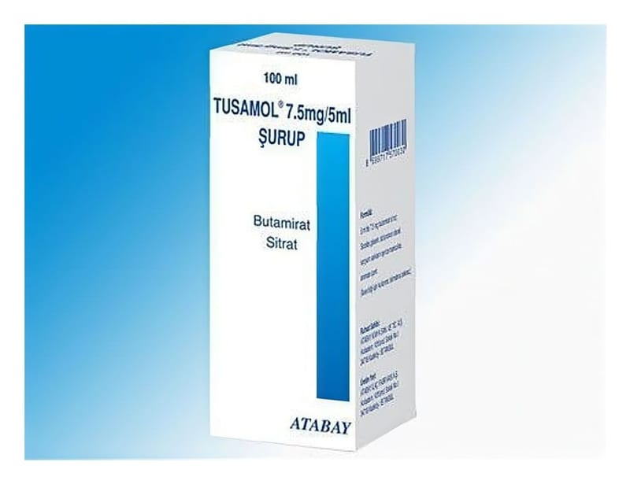

Tusamol 7,5 mg/5 ml Şurup

Ne için kullanılır
KT · Bölüm 1 TUSAMOL etkin madde olarak butamirat sitrat içeren, şurup formunda bir ilaçtır. TUSAMOL, “öksürük baskılayıcı ilaçlar” olarak adlandırılan bir ilaç grubuna dahildir. TUSAMOL şurup, 100 ml'lik renkli şişede, 5 ml'lik 1, 2.5 ve 5 ml'ye işaretli kaşık ölçekle beraber sunulmaktadır. TUSAMOL çeşitli nedenlerden kaynaklanan öksürüğün şikayetlere yönelik (semptomatik) tedavisinde kullanılır.